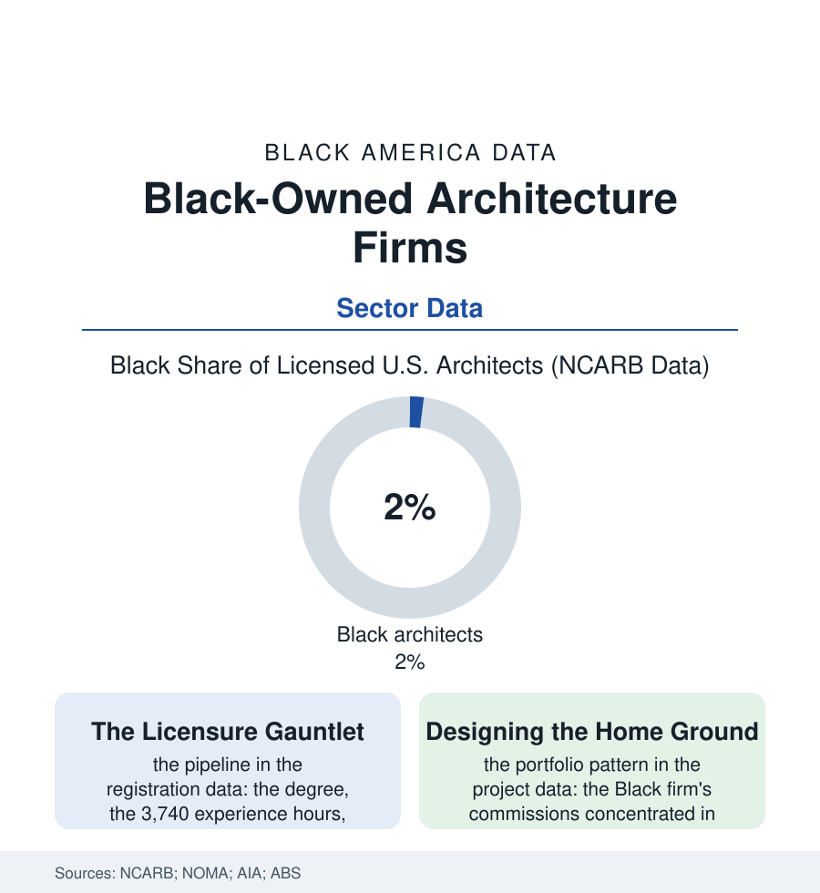

Black Business
The Drafting Table: Black Architects and Their Firms
Two percent of America's licensed architects are Black — and the firms they lead design, disproportionately, the churches, schools, and civic rooms of the communities in this atlas. The architecture file.

The buildings of this atlas — the church, the school, the museum, the housing block — were designed by somebody, and the profession that holds the pencil is among the most exclusive in the economy: about two percent of licensed American architects are Black, a figure that has moved within a narrow band for a generation. The firms those architects lead carry portfolios that read like the atlas's table of contents. This article reads the architecture file.
The Decade-Long Filter
The licensure path is the professions' steepest standard gauntlet, and the registration data let it be audited stage by stage: the accredited degree (the university architecture schools' Black enrollment in the low single digits in the education data, the HBCU programs — Howard, Hampton, Tuskegee, Prairie View, Florida A&M, Morgan State, Southern — carrying an outsized share of the pipeline that exists, their studios functioning as the profession's diversity engine entire), the experience hours logged under licensed supervision (the mentorship file's bottleneck: the hours must be signed by the profession the student is trying to enter), the six-part examination's pass rates — published by the registration boards with demographic cuts that show the gaps compounding at each division — and the decade the whole sequence consumes, financed by the debt file, before the title 'architect' may legally be used. The survivors inherit a market the firm data describe unsparingly: the Black-owned firm's median size a fraction of the industry's (the solo and five-person practices of the census codes), its commissions won through the public procurement shelf (the schools, the civic buildings, the set-aside and mentor-protégé architectures of the contracting file) and the community's own institutions — the church building committees whose trust the architect earns across a generation, the Black museum and cultural-center commissions that constitute, in the project data, a genre of their own. The genre's ambivalence is the CTE file's in professional dress: the home-ground portfolio as both the firm's distinction and its ceiling — the hospital tower and the corporate campus going, in the award data, to the firms whose portfolios already hold one, the track-record trap wearing a hard hat.
The Masters and the Movement
The file's history is a shelf of names the profession has spent the last decades formally restoring: Paul Revere Williams, who learned to draw upside down so white clients across the table would not have to sit beside him — the record's own detail — and designed the stars' houses and half of mid-century Los Angeles anyway; the Black firms of the modern movement's civic era; the deans and the firsts accumulating through the directories like survey markers. The present data hold the correction's machinery in the established forms: NOMA's chapters and its student organizations feeding the pipeline at the exposure stage (the profession's discovery problem — the child cannot aspire to the drafting table she has never seen, the architecture file's version of the library file's vanished keeper), the licensure-support programs attacking the examination gap, the equity audits of the great firms publishing their own two percents. And the work itself argues the stake better than the workforce case can: the architect decides what the light does in the classroom of the education file, whether the housing of the housing file dignifies or warehouses, how the church of the faith file gathers its people — the built environment of Black America substantially drawn, at two percent, by hands from outside it. The firms of this file are the standing counter-offer: a few hundred practices, a few thousand licensed names, and the portfolios — the schools, the sanctuaries, the museums of the community's own story — proving in brick what the registration data have yet to concede in numbers.
Reading the Architecture Data
The architecture file is the business section at the drafting table: the smallest credentialed shelf in the book, drawing the largest objects in it. NCARB publishes the two percent. The buildings publish the rejoinder — every Sunday, in naves the community's own architects raised, whether or not the profession's directories have learned their names. The pencil, in this profession, is a baton; the file's whole story is the hand it is finally passing to.
More in Black Business
Black-Owned Businesses: Counts, Receipts, and the Representation Gap
About 161,000 Black-owned employer firms and three million solo ventures: how the Census Bureau counts Black business ownership, where firms concentrate, and the gap between population share and business share.
Black Median Net Worth: The Wealth Gap in Federal Reserve Data
The Federal Reserve puts Black median family net worth at $44,900, against $285,000 for White families — about 16 cents on the dollar. The widest gap in economic data.
Black Buying Power: The $1.8 Trillion Consumer Economy
Black buying power is estimated at about $1.8 trillion — larger than the economy of most nations. What the figure measures, who produces it, and what it buys.
Source: National Council of Architectural Registration Boards demographic data; National Organization of Minority Architects; American Institute of Architects firm survey; U.S. Census Bureau Annual Business Survey.